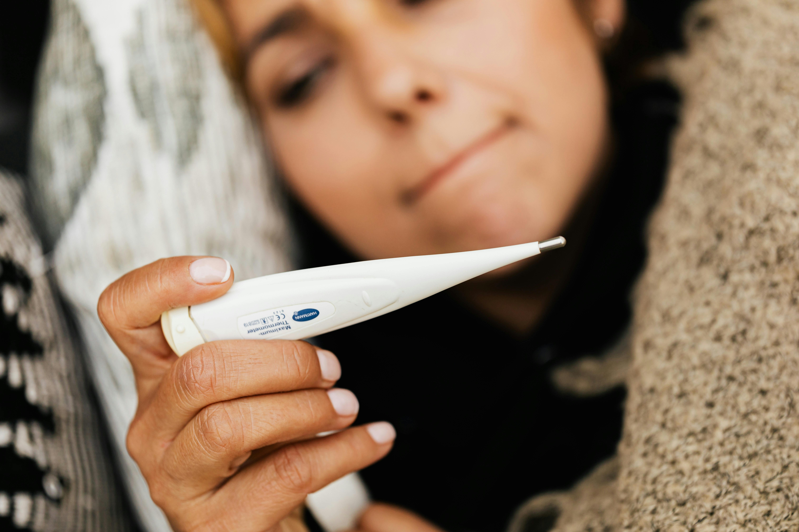

Influenza, commonly known as the flu, is a contagious respiratory illness caused by influenza viruses.
These viruses infect the nose, throat, and sometimes the lungs, leading to mild to severe illness.
Influenza typically spreads through droplets when an infected person coughs, sneezes, or talks,
and it can also spread by touching surfaces contaminated with the virus.
This is a known flu type that can cause flu pandemics. This can affect both humans and animals.
Influenza A is split into subtypes according to two proteins on the virus hemagglutinin (H)
and neuraminidase (N). Hemagglutinin has 18 subtypes while neuraminidase has 11.
Influenza B
This is a type of flu that is also known to cause flu pandemics.
This primarily affects humans. Instead of subtypes, influenza B has two lineages
that are called B/Victoria and B/Yamagata.
Influenza C
Typically found on humans, this is milder than A and B.
This type also doesn’t cause pandemics.
Where can you get Flu?
Photo by Polina Tankilevitch: https://www.pexels.com/photo/thermometers-on-white-surface-3873176/
Influenza can spread in a variety of environments, especially
those that facilitate close contact between people and where
the virus can survive on surfaces. This can range from crowded
places, poorly ventilated areas, cold and dry climates, and
hospitals and clinics.
When is Flu more common?
Photo by Anna Shvets: https://www.pexels.com/photo/photo-of-person-wearing-protective-wear-while-holding-globe-4167541/
Flu season typically peaks during the colder months, from fall to early spring.
In the Northern Hemisphere, this means it usually runs from October to March,
with peak activity often between December and February. In the Southern Hemisphere,
flu season occurs from April to September.The timing can vary slightly each year,
but flu is more common during these months due to a combination of factors, such as:
Indoor Crowding: People spend more time indoors in closer proximity.
Low Humidity: The flu virus thrives in colder, drier air.
Weaker Immune Response: Reduced sunlight can lower Vitamin D levels, affecting immunity.
Symptoms of Flu

Photo by Photo By: Kaboompics.com: https://www.pexels.com/photo/a-sick-woman-using-a-digital-thermometer-5207339/
Flu symptoms include:
sudden fever
dry cough
Headache
Muscle
joint pain
fatigue
sore throat
runny nose
While most people recover within a week without medical care,
the flu can cause severe complications like pneumonia or sepsis,
especially in high-risk groups.
In industrialized countries, flu-related deaths mainly occur in those aged 65 and older,
while in developing countries, most flu-related deaths in children under five occur.
How can I prevent the Flu?
Photo by Ketut Subiyanto: https://www.pexels.com/photo/person-washing-hands-4308196/
To prevent the flu, follow these key steps:
Get Vaccinated: The flu vaccine is your best defense against influenza.
Practice Good Hygiene: Wash hands frequently with soap and water; use hand sanitizer if necessary.
Cover Coughs and Sneezes: Use a tissue or your elbow to cover your mouth and nose.
Avoid Crowded Places: Stay away from sick individuals and crowded areas during flu season.